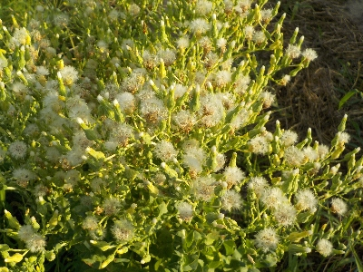
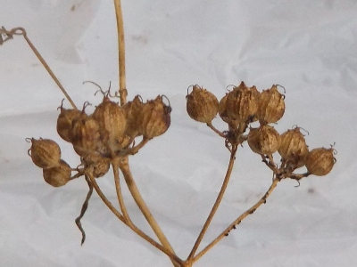
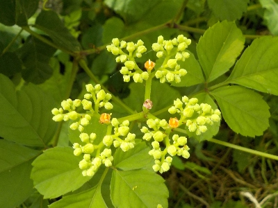

葉っぱもののタネが出来そうです。
2025/07/26

これはたぶんサンチュかな？
普段は放置で飛んで生えたものを育てるんだけど、これを収穫しようかな？
そこまでして大量に食べたい？うーん寒くなったら生野菜は食べたくないな。
でもまあ、試しに育ててみようかな。
2025/07/26

これはたぶんサンチュかな？
普段は放置で飛んで生えたものを育てるんだけど、これを収穫しようかな？
そこまでして大量に食べたい？うーん寒くなったら生野菜は食べたくないな。
でもまあ、試しに育ててみようかな。
2025/07/19

パクチーが茶色く枯れた状態になったのでタネを収穫しました。
このタネで来年も種蒔きをするんでしょう。
2025/07/01

気づいたら大きくなっていますよね。見つけたら取ろうとは思うんですが、あちこちで生えているのできりがないです。
なので巨大化したものだけ抜いています。
過去の日記
熱中症に注意しましょう。